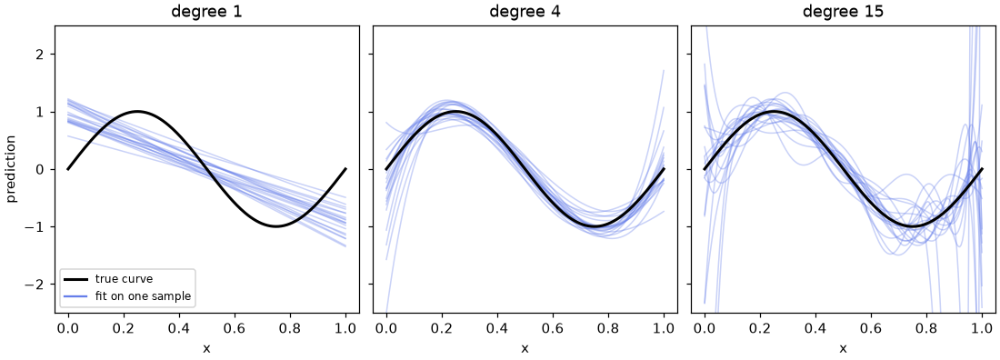
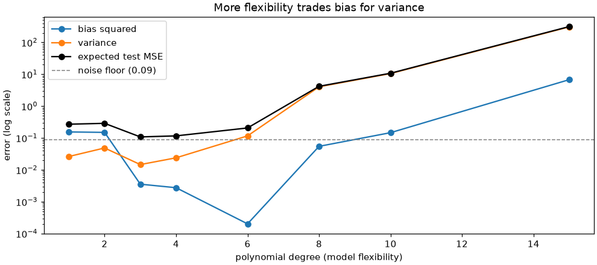

🎛️ Lesson 3.2: Regularization and the Bias-Variance Trade-off
Give a linear model the flexibility to capture real patterns, then add the one dial that stops it from memorizing noise.
🎯 Learning Objectives
By the end of this lesson, you will be able to:
- Explain underfitting and overfitting in terms of bias and variance, and recognize each from training and test errors
- Add polynomial and interaction features with
PolynomialFeaturesand predict how many columns they create - Fit
Ridge,LassoandElasticNetin a pipeline with scaling, and describe how their penalties differ - Choose the penalty strength
alphaby cross-validation on the training data only, withRidgeCVandLassoCV - Build a regularized demand forecast with interactions and judge it against baselines on a later year
In This Lesson
🧭 Too Simple, Too Flexible
In Lesson 3.1 a linear model learned one weight per feature and added them up. That is a strong assumption: a promotion adds the same lift to snowshoes in December as to tents in July. Pinecrest's demand does not work that way. Snow gear sells in winter, tents in summer, and the season effect depends on the category. A model that cannot express that is too simple, and no amount of data will fix it.
The obvious cure is to give the model more flexibility: curved terms, and products of features such as "Snow category and December". But flexibility has a price. A model with hundreds of weights can bend to fit the random ups and downs of the particular weeks it saw, and then those bends are wrong for every new week. That model is too flexible. This lesson is about finding the useful middle, and about regularization, the tool that lets you add flexibility without paying the full price.
💡 Mental Model: Three Students and a Practice Exam
Three students prepare for a forecasting exam with last year's practice questions. The first learns one rule ("demand is about 25 units") and applies it everywhere: consistent, but always a bit wrong. That is high bias. The second memorizes every practice answer, including the typos in the answer key: perfect on the practice exam, lost on the real one, and a different set of practice questions would have produced a completely different student. That is high variance. The third learns the real patterns and deliberately ignores details that seem too specific to trust. Regularization is how you turn a memorizer into that third student: you let the model learn many things, but you charge it for every strong opinion.
🤔 Why This Matters
Every model in the rest of the course has a flexibility dial: the depth of a tree, the number of neighbors in k-nearest neighbors (next lesson), the number of boosting rounds, the size of a neural network. The vocabulary you build here (bias, variance, validation, a penalty strength chosen by cross-validation) is how you reason about all of them. And Ridge regression itself is one of the most reliable models you will ever use: fast, stable and hard to break.
📐 Polynomial Features
A linear model can only add up its columns. To let it draw a curve, you give it new columns that are powers and products of the old ones. scikit-learn's PolynomialFeatures is a transformer that does exactly that.
import numpy as np
import pandas as pd
from sklearn.preprocessing import PolynomialFeatures
tiny = pd.DataFrame({"a": [1, 2, 3], "b": [10, 20, 30]})
poly = PolynomialFeatures(degree=2, include_bias=False).set_output(transform="pandas")
print(poly.fit_transform(tiny))Output
a b a^2 a b b^2
0 1.0 10.0 1.0 10.0 100.0
1 2.0 20.0 4.0 40.0 400.0
2 3.0 30.0 9.0 90.0 900.0Degree 2 adds every square (a^2, b^2) and every product of two columns (a b, an interaction). The model is still linear in its weights, which is why it is still called linear regression, but it can now draw a parabola in a, and it can let the effect of a depend on b. include_bias=False drops a column of ones, because the model's intercept already plays that role.
To see flexibility at work without real-world mess, use a made-up curve where you know the truth. The block below creates a smooth wave, then draws small noisy samples from it. Seeds are fixed (default_rng(42)) so your numbers match this page.
rng = np.random.default_rng(42)
def true_curve(x):
return np.sin(2 * np.pi * x)
def make_sample(n=25):
"""n points with x between 0 and 1 and noise with standard deviation 0.3."""
x = rng.uniform(0, 1, n)
return x.reshape(-1, 1), true_curve(x) + rng.normal(0, 0.3, n)
X_small, y_small = make_sample() # 25 points to learn from
X_new, y_new = make_sample(500) # 500 fresh points to test on
print(X_small.shape, X_new.shape)Output
(25, 1) (500, 1)Now fit polynomials of degree 1, 4 and 15. Each model is a small pipeline: make the powers, scale them (powers of a number between 0 and 1 have wildly different ranges), then fit. The noise has a standard deviation of 0.3, so even a perfect model has a mean squared error of about 0.3² = 0.09 on new points.
from sklearn.linear_model import LinearRegression
from sklearn.metrics import mean_squared_error
from sklearn.pipeline import make_pipeline
from sklearn.preprocessing import StandardScaler
def poly_model(degree, regressor=None):
if regressor is None:
regressor = LinearRegression()
return make_pipeline(PolynomialFeatures(degree, include_bias=False), StandardScaler(), regressor)
for degree in [1, 4, 15]:
m = poly_model(degree).fit(X_small, y_small)
train_mse = mean_squared_error(y_small, m.predict(X_small))
test_mse = mean_squared_error(y_new, m.predict(X_new))
print(f"degree {degree:2d} train MSE {train_mse:.3f} test MSE {test_mse:.3f}")Output
degree 1 train MSE 0.331 test MSE 0.283
degree 4 train MSE 0.025 test MSE 0.133
degree 15 train MSE 0.016 test MSE 0.187Read the two columns together. Degree 1 is a straight line through a wave: poor on the training points and poor on new ones. That is underfitting. Degree 15 has the lowest training error of the three, even below the 0.09 noise floor, yet its test error is worse than degree 4's: it learned the noise. That is overfitting. Degree 4 has the best test error, about 0.13 against a floor of 0.09.
✅ The Diagnostic You Will Use Forever
High training error and high test error: the model is too simple (add features or flexibility). Low training error and much higher test error: the model is too flexible for the data (simplify, regularize, or get more data). Training error alone tells you almost nothing about which situation you are in.
🎯 Bias and Variance, Measured
One sample can be lucky or unlucky. The real definitions of bias and variance are about what happens across samples: if Pinecrest could rerun last year a hundred times, each with different random noise, how much would the fitted model change? With a made-up curve you can do exactly that. Fit each degree on 20 different samples of 25 points and draw all 20 fitted curves.
import matplotlib.pyplot as plt
samples = [make_sample() for _ in range(100)] # 100 different training sets of 25 points
x_grid = np.linspace(0, 1, 200).reshape(-1, 1)
fig, axes = plt.subplots(1, 3, figsize=(10, 3.6), sharey=True, layout="constrained")
for ax, degree in zip(axes, [1, 4, 15]):
for X_s, y_s in samples[:20]:
ax.plot(x_grid, poly_model(degree).fit(X_s, y_s).predict(x_grid), color="#667eea", alpha=0.35, linewidth=1)
ax.plot(x_grid, true_curve(x_grid), color="black", linewidth=2, label="true curve")
ax.set_title(f"degree {degree}")
ax.set_ylim(-2.5, 2.5)
ax.set_xlabel("x")
axes[0].set_ylabel("prediction")
axes[0].plot([], [], color="#667eea", label="fit on one sample")
axes[0].legend(loc="lower left", fontsize=8)
plt.show()
The picture makes the two words concrete:
- Bias is how far the average fitted curve is from the truth. The straight lines agree with each other and are all wrong in the same way.
- Variance is how much the fitted curves disagree with each other. The degree-15 curves are a different shape for every sample, so whichever one you happen to get is unreliable.
For squared error there is a neat identity. The expected error on a new point splits into three parts:
expected test error = bias² + variance + noise
Noise is the part no model can remove (0.09 here). Measure the other two from the 100 samples, on points away from the edges:
x_eval = np.linspace(0.05, 0.95, 50).reshape(-1, 1)
def bias_variance(make_model):
"""Fit a fresh model on each of the 100 samples; return (bias squared, variance) on x_eval."""
preds = np.array([make_model().fit(X_s, y_s).predict(x_eval) for X_s, y_s in samples])
bias_sq = ((preds.mean(axis=0) - true_curve(x_eval.ravel())) ** 2).mean()
variance = preds.var(axis=0).mean()
return bias_sq, variance
rows = []
for degree in [1, 2, 3, 4, 6, 8, 10, 15]:
bias_sq, variance = bias_variance(lambda: poly_model(degree))
rows.append({"degree": degree, "bias^2": bias_sq, "variance": variance,
"expected MSE": bias_sq + variance + 0.09})
bv = pd.DataFrame(rows).set_index("degree")
print(bv.round(3))Output
bias^2 variance expected MSE
degree
1 0.155 0.026 0.271
2 0.150 0.049 0.289
3 0.004 0.015 0.108
4 0.003 0.024 0.117
6 0.000 0.117 0.207
8 0.055 4.050 4.194
10 0.147 10.552 10.789
15 6.780 307.451 314.321fig, ax = plt.subplots(figsize=(9, 4), layout="constrained")
ax.plot(bv.index, bv["bias^2"], marker="o", label="bias squared")
ax.plot(bv.index, bv["variance"], marker="o", label="variance")
ax.plot(bv.index, bv["expected MSE"], marker="o", color="black", label="expected test MSE")
ax.axhline(0.09, color="gray", linestyle="--", linewidth=1, label="noise floor (0.09)")
ax.set_yscale("log")
ax.set_xlabel("polynomial degree (model flexibility)")
ax.set_ylabel("error (log scale)")
ax.set_title("More flexibility trades bias for variance")
ax.legend()
plt.show()
This is the bias-variance trade-off. More flexibility removes bias but adds variance; the best model sits at the bottom of the U. Notice how lopsided the right side is: a little too much flexibility with only 25 points is catastrophic, because variance explodes. (Bias creeps back up at high degrees too: a few fits are so wild that even the average of 100 curves is dragged off the truth. With 25 points, those models are not just noisy, they are numerically unstable.)
⚠️ You Cannot Compute This on Real Data
This experiment needed the true curve and 100 independent training sets. In real work you have one dataset and no truth, so you estimate the bottom of the U with a validation set or cross-validation instead. That is exactly what the rest of this lesson does.
🧲 Ridge: A Penalty on Big Weights
Look at what an overfitting polynomial does to its weights. To swing through every noisy point it needs huge positive and negative weights that nearly cancel out. Ridge regression attacks exactly that. Ordinary least squares picks the weights that minimize the squared errors. Ridge minimizes the squared errors plus a charge for large weights:
Ridge loss = sum of squared errors + alpha × (w₁² + w₂² + ... + wₚ²)
The penalty strength alpha is the dial. At alpha=0 Ridge is plain linear regression. As alpha grows, every weight is pulled toward zero (but never exactly to zero), so the model can only make a weight large if it reduces the error enough to pay for it. Think of a rubber band attached to each weight, pulling it back to zero; the data has to pull harder than the band. The intercept is not penalized.
from sklearn.linear_model import Ridge
for name, regressor in [("least squares", LinearRegression()), ("ridge alpha=0.1", Ridge(alpha=0.1))]:
m = poly_model(15, regressor).fit(X_small, y_small)
weights = m[-1].coef_
test_mse = mean_squared_error(y_new, m.predict(X_new))
print(f"{name:16s} largest |weight| {np.abs(weights).max():9.1f} test MSE {test_mse:.3f}")Output
least squares largest |weight| 1044.5 test MSE 0.187
ridge alpha=0.1 largest |weight| 1.4 test MSE 0.132Same 15-degree features, same 25 points. The penalty shrinks the largest weight from about a thousand to about 1, and the test error drops to the level of the degree-4 model. Ridge did not remove any features; it made the model use them gently. Now sweep alpha with the bias-variance experiment:
for alpha in [0.0001, 0.01, 0.1, 1, 10]:
bias_sq, variance = bias_variance(lambda: poly_model(15, Ridge(alpha=alpha)))
print(f"alpha {alpha:<7} bias^2 {bias_sq:.3f} variance {variance:.3f} expected MSE {bias_sq + variance + 0.09:.3f}")Output
alpha 0.0001 bias^2 0.001 variance 0.579 expected MSE 0.669
alpha 0.01 bias^2 0.005 variance 0.147 expected MSE 0.242
alpha 0.1 bias^2 0.021 variance 0.061 expected MSE 0.172
alpha 1 bias^2 0.064 variance 0.078 expected MSE 0.232
alpha 10 bias^2 0.118 variance 0.037 expected MSE 0.244The same U appears, now with alpha as the dial instead of the degree. A tiny alpha leaves the degree-15 model nearly as wild as before; a large one flattens it toward a line (bias climbs). Around alpha=0.1 the degree-15 model's expected error is 0.17, against 314 with no penalty at all (the table above): not quite the hand-picked degree 4, but in the same league, and you never had to choose a degree. That is the practical promise of regularization: you can give a model generous features and let one continuous dial control how much of that flexibility it may use.
⚠️ Penalties Need Scaled Features
The penalty adds up squared weights, so it only treats features fairly if they are on the same scale. A feature measured in dollars gets a small weight and is barely penalized; the same feature measured in thousands of dollars needs a weight a thousand times larger and is penalized heavily. Always put a StandardScaler (or a ColumnTransformer that scales the numeric columns) in front of Ridge, Lasso and ElasticNet, inside the pipeline. Mistake 2 below shows what happens otherwise.
📦 Overfitting Real Demand Data
Back to Pinecrest. The weekly demand table has 24 products in 4 stores over 104 weeks. Train on 2024, test on 2025, the time-respecting split you have used since Lesson 1.2. Add a month column so the model can learn seasons.
demand = pd.read_csv("data/weekly_demand.csv")
demand["month"] = pd.to_datetime(demand["week_start"]).dt.month
train = demand[demand["year"] == 2024]
test = demand[demand["year"] == 2025]
print(train.shape, test.shape)
print(demand.groupby(["category", "month"])["units_sold"].mean().unstack().loc[["Snow", "Tents", "Apparel"], [1, 4, 7, 10, 12]].round(1))Output
(5088, 16) (4896, 16)
month 1 4 7 10 12
category
Snow 32.6 2.7 0.3 10.1 41.5
Tents 5.1 16.9 32.4 10.2 9.2
Apparel 26.3 19.3 15.6 27.7 41.7The season effect depends on the category: Snow is huge in December and dead in July, Tents are the reverse, Apparel leans to winter. A plain linear model with one weight for "July" and one for "Snow" cannot express "Snow in July". Interactions can. The preprocessing below keeps one weight per product, and builds all pairwise products of the numeric features, the category, the store and the month.
from sklearn.compose import ColumnTransformer, TransformedTargetRegressor
from sklearn.preprocessing import OneHotEncoder
numeric = ["price", "discount_pct", "promo", "holiday_week", "avg_high_temp_f"]
grouping = ["category", "store", "month"]
columns = numeric + grouping + ["product_id"]
interactions = make_pipeline(
ColumnTransformer([
("num", StandardScaler(), numeric),
("cat", OneHotEncoder(sparse_output=False, handle_unknown="ignore"), grouping),
]),
PolynomialFeatures(degree=2, interaction_only=True, include_bias=False),
)
features = ColumnTransformer([
("product", OneHotEncoder(sparse_output=False, handle_unknown="ignore"), ["product_id"]),
("inter", interactions, numeric + grouping),
])
print(features.fit(train[columns]).transform(train[columns].head()).shape)Output
(5, 489)489 columns: 24 product columns, 30 scaled or one-hot columns, and 435 products of pairs (interaction_only=True skips squares, which would only duplicate the 0/1 columns). About 108 of those products are always zero, such as "Bend and Boise at the same time", because PolynomialFeatures multiplies blindly. They are harmless, but they are a reminder that this transformer explodes the column count: Exercise 1 counts how fast.
Units sold are skewed (a few weeks sell hundreds), so the models learn log1p(units) and convert back with expm1. TransformedTargetRegressor does that wrapping for you, so predict still returns units. Now the experiment: imagine Pinecrest's analysts prototyping on a pilot sample of 400 rows (product-store-weeks), about as many rows as there are useful columns.
from sklearn.metrics import mean_absolute_error
def demand_model(regressor):
return TransformedTargetRegressor(make_pipeline(features, regressor), func=np.log1p, inverse_func=np.expm1)
pilot = train.sample(400, random_state=42)
for name, regressor in [("least squares", LinearRegression()), ("ridge alpha=1", Ridge(alpha=1)),
("ridge alpha=10", Ridge(alpha=10)), ("ridge alpha=100", Ridge(alpha=100))]:
m = demand_model(regressor).fit(pilot[columns], pilot["units_sold"])
pred = m.predict(test[columns])
print(f"{name:16s} train MAE {mean_absolute_error(pilot['units_sold'], m.predict(pilot[columns])):5.2f}"
f" test MAE {mean_absolute_error(test['units_sold'], pred):6.2f} largest forecast {pred.max():8.0f}")Output
least squares train MAE 3.43 test MAE 42.17 largest forecast 15297
ridge alpha=1 train MAE 4.16 test MAE 11.97 largest forecast 315
ridge alpha=10 train MAE 5.58 test MAE 10.00 largest forecast 181
ridge alpha=100 train MAE 9.03 test MAE 12.43 largest forecast 135Plain least squares fits the pilot weeks closely (MAE about 3 units) and then forecasts one 2025 week at more than fifteen thousand units for a product that never sold more than a few hundred: classic variance. Ridge with alpha=10 gives up some training fit and cuts the test error by about three quarters. Too much penalty (alpha=100) starts to underfit again. The U, on real data.
💡 More Data Is Also a Regularizer
With the full 2024 year (5,088 rows) the same 489 columns are far less dangerous, and least squares behaves almost as well as Ridge. Regularization matters most when columns are many relative to rows: small datasets, many interactions, one-hot columns with rare categories. The project uses the full year and lets cross-validation decide how much penalty is still worth it.
✂️ Lasso and Elastic Net
Lasso changes one thing: it charges the absolute size of each weight instead of its square.
Lasso loss = (1 / 2n) × sum of squared errors + alpha × (|w₁| + |w₂| + ... + |wₚ|)
That small change has a big effect. Under a squared penalty, a tiny weight costs almost nothing, so Ridge keeps every feature a little. Under an absolute penalty, even a tiny weight costs a full alpha per unit, so Lasso prefers to set weak features to exactly zero. Lasso both shrinks and selects. (scikit-learn scales Lasso's error term by the number of rows, so its alpha values are much smaller than Ridge's: do not compare them directly.)
import warnings
from sklearn.linear_model import Lasso
for alpha in [0.003, 0.01, 0.03]:
m = demand_model(Lasso(alpha=alpha, max_iter=20_000)).fit(pilot[columns], pilot["units_sold"])
kept = (m.regressor_[-1].coef_ != 0).sum()
print(f"lasso alpha={alpha:<6} weights kept {kept:3d} of 489 test MAE {mean_absolute_error(test['units_sold'], m.predict(test[columns])):5.2f}")Output
lasso alpha=0.003 weights kept 120 of 489 test MAE 9.57
lasso alpha=0.01 weights kept 52 of 489 test MAE 9.92
lasso alpha=0.03 weights kept 19 of 489 test MAE 11.98With alpha=0.003 Lasso keeps about a quarter of the columns and beats every Ridge model on this pilot. Raise alpha and it keeps fewer and fewer, until it underfits. A model with 50 weights instead of 489 is also easier to explain and cheaper to run, which is sometimes worth a little accuracy.
A rough guide to the three penalized models (whichever you pick, choose its alpha by cross-validation, as shown below):
👯 When Features Are Twins
Lasso has a weakness. When two features carry the same information, it tends to keep one and drop the other, somewhat arbitrarily. Ridge splits the weight between them. To see it, give a Snow-only model the temperature twice, once in Fahrenheit and once in Celsius (a perfectly correlated copy, the kind that sneaks in when tables are joined):
from sklearn.linear_model import ElasticNet
snow = train[train["category"] == "Snow"]
twins = snow[["avg_high_temp_f"]].assign(avg_high_temp_c=(snow["avg_high_temp_f"] - 32) * 5 / 9)
y_snow = np.log1p(snow["units_sold"])
for name, regressor in [("ridge", Ridge(alpha=1)), ("lasso", Lasso(alpha=0.05)),
("elastic net", ElasticNet(alpha=0.05, l1_ratio=0.5))]:
m = make_pipeline(StandardScaler(), regressor).fit(twins, y_snow)
print(f"{name:12s} weights (F, C): {m[-1].coef_.round(3)}")Output
ridge weights (F, C): [-0.607 -0.607]
lasso weights (F, C): [-1.164 -0. ]
elastic net weights (F, C): [-0.589 -0.586]Ridge shares the effect equally; Lasso puts all of it on one twin and zero on the other; Elastic Net, which charges a mix of both penalties, shares it again while still able to zero out useless features. Its l1_ratio sets the mix: 1 is pure Lasso, values near 0 approach Ridge. Lasso's choice of twin depends on details such as column order, so never read "Lasso dropped it" as "it does not matter". It may simply have a twin.
| Model | Penalty | Zeros out features? | With correlated twins |
|---|---|---|---|
Ridge | alpha × sum of w² | No, shrinks all | Shares the weight |
Lasso | alpha × sum of |w| | Yes | Picks one, arbitrarily |
ElasticNet | a mix, set by l1_ratio | Yes, fewer | Shares the weight |
💡 You Have Already Met Regularization
LogisticRegression is regularized by default: its C parameter is an inverse penalty strength (small C means a strong penalty) with an L2 (Ridge-style) penalty unless you choose otherwise. That is one more reason scaling mattered for it in Lesson 1.1.
🎚️ Choosing alpha by Cross-Validation
So far you picked alpha by looking at the test MAE. That was fine for a demonstration and is wrong for real work: choosing the dial by the test score turns the test set into training data, and the final number becomes optimistic. The honest way is the one from Lesson 1.3: try each candidate with cross-validation on the training rows only, keep the winner, and look at the test set once.
scikit-learn has built-in versions that do this search efficiently: RidgeCV, LassoCV and ElasticNetCV. They behave like the plain models but choose their own alpha inside fit, and report it as alpha_.
from sklearn.linear_model import LassoCV, RidgeCV
from sklearn.model_selection import KFold
cv = KFold(n_splits=5, shuffle=True, random_state=42)
searches = {
"RidgeCV": RidgeCV(alphas=np.logspace(-1, 3, 9), cv=cv),
"LassoCV": LassoCV(alphas=np.logspace(-3.5, -1, 11), cv=cv, max_iter=20_000),
}
for name, regressor in searches.items():
m = demand_model(regressor).fit(pilot[columns], pilot["units_sold"])
chosen = m.regressor_[-1]
mae = mean_absolute_error(test["units_sold"], m.predict(test[columns]))
print(f"{name:8s} chose alpha={chosen.alpha_:.4f} weights kept {(chosen.coef_ != 0).sum():3d} test MAE {mae:.2f}")Output
RidgeCV chose alpha=3.1623 weights kept 377 test MAE 10.35
LassoCV chose alpha=0.0056 weights kept 83 test MAE 9.50Without ever touching the 2025 rows, cross-validation found penalty strengths close to the best ones you saw by peeking. np.logspace(-1, 3, 9) means nine values from 10⁻¹ to 10³, evenly spaced on a log scale; penalties work on a multiplicative scale, so search them that way.
⚠️ A Note on Folds for Weekly Data
A shuffled KFold puts neighboring weeks of the same product in different folds, so the cross-validation score is a little optimistic and may favor slightly too little penalty. It is still a fair way to rank alphas, and the 2025 test set, which the model never sees, gives the honest final number. For forecasting where the newest weeks matter most, TimeSeriesSplit (Lesson 1.3) is the stricter choice.
⚠️ Common Mistakes
Regularized models rarely crash. Most of their mistakes are silent, which makes them worth learning by name.
1. Copying an Old Tutorial's normalize=True
Ridge(alpha=1.0, normalize=True)Error
TypeError: Ridge.__init__() got an unexpected keyword argument 'normalize'What it means: older versions of scikit-learn let linear models scale their own inputs; that option was removed. The same goes for LassoCV(n_alphas=50) in older code, which now raises a similar TypeError (pass alphas=50 or a list instead). Fix: put a StandardScaler in a pipeline in front of the model, as everywhere in this lesson.
2. Penalizing Unscaled Features
Fit the same Ridge model on Snow weeks twice, once with the price in dollars and once in thousands of dollars, without a scaler:
snow_X = snow[["price", "avg_high_temp_f"]]
snow_X_thousands = snow_X.assign(price=snow_X["price"] / 1000)
for name, X_try in [("price in $", snow_X), ("price in $1000s", snow_X_thousands)]:
m = Ridge(alpha=100).fit(X_try, y_snow)
print(f"{name:16s} R2 on training rows {m.score(X_try, y_snow):.3f} weights {m.coef_.round(4)}")Output (no error, and that is the problem)
price in $ R2 on training rows 0.770 weights [-0.0038 -0.0728]
price in $1000s R2 on training rows 0.752 weights [-0.0395 -0.0714]What happened: the information is identical, yet the second model fits worse, because rescaling a column changed how hard the penalty pushes on it. In dollars the price weight is -0.0038, so in thousands of dollars the same effect needs a weight of -3.8. The penalty refuses to pay for a weight that large and shrinks it to -0.04: about 99% of the price effect is lost. Results that change when you change units are a red flag. Fix: scale inside the pipeline (make_pipeline(StandardScaler(), Ridge(...))); then the units no longer matter.
3. Lasso That Has Not Converged
with warnings.catch_warnings(record=True) as caught:
warnings.simplefilter("always")
Lasso(alpha=0.0001, max_iter=50).fit(features.transform(pilot[columns]), np.log1p(pilot["units_sold"]))
print(caught[0].category.__name__)
print(str(caught[0].message).split(".")[0])Output
ConvergenceWarning
Objective did not convergeWhat it means: Lasso finds its weights step by step (coordinate descent) and ran out of steps before settling, so the weights are half-finished. It happens with very small alpha, many correlated columns, or unscaled data. Fix: scale the features, raise max_iter (this lesson uses 20,000), and ask whether such a tiny alpha is sensible; at alpha=0 you should use LinearRegression, and scikit-learn warns you if you do not.
4. Choosing alpha with the Test Set
peeked = {}
for alpha in [1, 3, 10, 30, 100]:
m = demand_model(Ridge(alpha=alpha)).fit(pilot[columns], pilot["units_sold"])
peeked[alpha] = mean_absolute_error(test["units_sold"], m.predict(test[columns]))
best = min(peeked, key=peeked.get)
print(f"'best' alpha {best}, test MAE {peeked[best]:.2f} (this number is now optimistic)")Output (no error, and that is the problem)
'best' alpha 10, test MAE 10.00 (this number is now optimistic)What happened: the loop chose alpha by its test score, so the test set helped train the model. With five candidates the optimism is small; with a grid of hundreds of settings across several models it can be large, and the forecast will disappoint in production. Fix: choose with cross-validation on the training rows (RidgeCV, LassoCV, or the general tools in Lesson 6.2) and touch the test set once.
5. Scaling After the Polynomial Step, or Not at All
In poly_model the order is PolynomialFeatures, then StandardScaler, then the model. If you skip the scaler, x^15 for x between 0 and 1 is a column of tiny numbers that needs an enormous weight, and the penalty crushes it while leaving x alone: the regularization is uneven for no good reason. With raw features in the hundreds (prices, temperatures), the squares and cubes reach millions and least squares becomes numerically fragile too. Fix: scale the inputs first when they are on very different scales, and always scale what goes into the penalized model.
🛠️ Project: The Interaction Forecast
Pinecrest's planners need weekly unit forecasts for 2025, per product and store, to place orders. Your job: start from honest baselines, add season-by-category interactions, let cross-validation choose the Ridge penalty on 2024 data only, and report the 2025 error once. Start a fresh notebook, lesson_3_2_project. Allow about 45 minutes.
🛠️ Step 1: Load, split by time and measure two baselines (10 min)
A forecast has to beat simple rules a planner could use without any model: the overall average, and each product's 2024 average.
import numpy as np
import pandas as pd
from sklearn.metrics import mean_absolute_error
demand = pd.read_csv("data/weekly_demand.csv")
demand["month"] = pd.to_datetime(demand["week_start"]).dt.month
train = demand[demand["year"] == 2024]
test = demand[demand["year"] == 2025]
results = {}
results["overall mean"] = mean_absolute_error(test["units_sold"], np.full(len(test), train["units_sold"].mean()))
product_means = train.groupby("product_id")["units_sold"].mean()
results["product mean"] = mean_absolute_error(test["units_sold"], test["product_id"].map(product_means))
for name, mae in results.items():
print(f"{name:14s} MAE {mae:.2f}")Output
overall mean MAE 17.13
product mean MAE 13.42Knowing which product it is cuts the error by about a fifth. Any model has to beat 13.42 units per week to be worth building.
🛠️ Step 2: A main-effects Ridge model (10 min)
One weight per numeric feature, per product, per store and per month, and no interactions. Ridge with a mild penalty, on the log of units.
from sklearn.compose import ColumnTransformer, TransformedTargetRegressor
from sklearn.linear_model import Ridge, RidgeCV
from sklearn.model_selection import KFold
from sklearn.pipeline import make_pipeline
from sklearn.preprocessing import OneHotEncoder, PolynomialFeatures, StandardScaler
numeric = ["price", "discount_pct", "promo", "holiday_week", "avg_high_temp_f"]
grouping = ["category", "store", "month"]
columns = numeric + grouping + ["product_id"]
def log_target(pipeline):
return TransformedTargetRegressor(pipeline, func=np.log1p, inverse_func=np.expm1)
main_effects = ColumnTransformer([
("num", StandardScaler(), numeric),
("cat", OneHotEncoder(sparse_output=False, handle_unknown="ignore"), ["product_id", "store", "month"]),
])
main_model = log_target(make_pipeline(main_effects, Ridge(alpha=1))).fit(train[columns], train["units_sold"])
results["ridge, main effects"] = mean_absolute_error(test["units_sold"], main_model.predict(test[columns]))
print(f"ridge, main effects MAE {results['ridge, main effects']:.2f}")Output
ridge, main effects MAE 10.62🛠️ Step 3: Add the interactions (5 min)
Reuse the interaction design from the lesson: product columns plus all pairwise products of the numeric features, category, store and month.
interactions = make_pipeline(
ColumnTransformer([
("num", StandardScaler(), numeric),
("cat", OneHotEncoder(sparse_output=False, handle_unknown="ignore"), grouping),
]),
PolynomialFeatures(degree=2, interaction_only=True, include_bias=False),
)
features = ColumnTransformer([
("product", OneHotEncoder(sparse_output=False, handle_unknown="ignore"), ["product_id"]),
("inter", interactions, numeric + grouping),
])
print(features.fit_transform(train[columns]).shape)Output
(5088, 489)🛠️ Step 4: Let cross-validation choose alpha (10 min)
RidgeCV tries each candidate with 5-fold cross-validation inside the 2024 rows. Ask it to score by mean absolute error (on the log scale it trains on), since MAE is the planners' metric.
cv = KFold(n_splits=5, shuffle=True, random_state=42)
ridge_cv = RidgeCV(alphas=[0.1, 1, 10, 100], cv=cv, scoring="neg_mean_absolute_error")
forecaster = log_target(make_pipeline(features, ridge_cv)).fit(train[columns], train["units_sold"])
chosen = forecaster.regressor_[-1]
print("chosen alpha:", chosen.alpha_)
print(f"cross-validated MAE (log units): {-chosen.best_score_:.4f}")Output
chosen alpha: 1.0
cross-validated MAE (log units): 0.3283With about five thousand rows the best penalty is mild: the data can support 489 columns. Notice that you did not need the 2025 rows to decide that.
🛠️ Step 5: Test once on 2025 (5 min)
from sklearn.metrics import r2_score
pred_2025 = forecaster.predict(test[columns])
results["ridge + interactions"] = mean_absolute_error(test["units_sold"], pred_2025)
print(pd.Series(results).round(2).to_string())
print(f"R2 on 2025: {r2_score(test['units_sold'], pred_2025):.3f}")Output
overall mean 17.13
product mean 13.42
ridge, main effects 10.62
ridge + interactions 7.92
R2 on 2025: 0.754The interactions are the big win: from about 10.6 to about 7.9 units of error per week, less than half the overall-mean baseline. For comparison, a gradient-boosted tree model (Lesson 5.3) with default settings scores about 8.2 on this same split. Trees discover interactions by themselves; a linear model needs you to supply them, and then regularization keeps it stable.
🛠️ Step 6: Read the biggest interactions and save the forecast (5 min)
Pair each weight with its column name, keep the interaction terms (their names contain a space), and look at the largest. Then save the forecasts for the planners.
names = forecaster.regressor_[0].get_feature_names_out()
weights = pd.Series(chosen.coef_, index=names)
inter_weights = weights[weights.index.str.contains(" ")]
inter_weights.index = inter_weights.index.str.replace("inter__", "").str.replace("num__", "").str.replace("cat__", "")
print(inter_weights.sort_values().iloc[[0, 1, 2, -3, -2, -1]].round(2))
forecast = test[["week_start", "store", "product_id", "units_sold"]].assign(forecast=pred_2025.round(1))
forecast.to_csv("demand_forecast_2025.csv", index=False)
print(len(forecast), "rows saved to demand_forecast_2025.csv")Output
category_Snow month_5 -0.86
avg_high_temp_f category_Snow -0.84
category_Snow month_8 -0.73
category_Snow month_1 0.65
category_Snow month_11 0.83
category_Snow month_12 0.91
dtype: float64
4896 rows saved to demand_forecast_2025.csvThe weights are on the log scale and describe the model, not proven causes, but they make sense. All six of the strongest involve Snow: pushed down in May and August and in warm weather, pushed up from November to January. These are exactly the "Snow in July" effects the main-effects model could not express. (Try inter_weights[inter_weights.index.str.contains("Tents")] to see Tents move the other way.)
✅ Project Completion Checklist
- Training uses only 2024 rows and the test set is 2025, untouched until Step 5
- You know both baselines (17.13 and 13.42) and your model beats them
- All scaling and encoding happen inside the pipeline, and the target is modeled as
log1p(units) alphawas chosen byRidgeCVwith 5-fold cross-validation, not by the test score- Your results table shows the interaction model clearly ahead of the main-effects model
demand_forecast_2025.csvholds one forecast per product, store and week (4,896 rows)
🏋️ Hands-on Exercises
Try each one before opening the solution. They continue in the project notebook, so train, test, features, columns, cv and log_target already exist.
🏋️ Exercise 1: Count the Columns
Without running anything, guess how many columns PolynomialFeatures(degree=d, include_bias=False) makes from 5 and from 30 input columns, for d = 2 and 3. Then check with n_output_features_ after fitting on a small array of zeros.
💡 Hint
np.zeros((2, n)) is enough to fit on: the count depends only on the number of columns.
✅ Solution
from sklearn.preprocessing import PolynomialFeatures
for n_cols in [5, 30]:
for degree in [2, 3]:
pf = PolynomialFeatures(degree=degree, include_bias=False).fit(np.zeros((2, n_cols)))
print(f"{n_cols:2d} columns, degree {degree}: {pf.n_output_features_:5d} features")Output
5 columns, degree 2: 20 features
5 columns, degree 3: 55 features
30 columns, degree 2: 495 features
30 columns, degree 3: 5455 featuresThe count grows roughly like the number of columns raised to the degree. Thirty columns at degree 3 already gives more features than the 5,088 training rows: a recipe for variance unless you regularize hard. This is why the project crossed only a chosen group of columns.
🏋️ Exercise 2: Draw the Validation Curve
Use validation_curve from sklearn.model_selection on the 400-row pilot sample (train.sample(400, random_state=42)) to score Ridge alphas [0.1, 1, 10, 100, 1000] with the project's cv and scoring="neg_mean_absolute_error". Print the mean training and validation MAE (on log units) for each alpha. Where is the bottom of the U?
💡 Hint
Build the model as make_pipeline(features, Ridge()) and fit it on np.log1p(...) directly. The parameter name for the penalty inside a pipeline is ridge__alpha.
✅ Solution
from sklearn.model_selection import validation_curve
pilot = train.sample(400, random_state=42)
alphas = [0.1, 1, 10, 100, 1000]
train_scores, val_scores = validation_curve(
make_pipeline(features, Ridge()), pilot[columns], np.log1p(pilot["units_sold"]),
param_name="ridge__alpha", param_range=alphas, cv=cv, scoring="neg_mean_absolute_error",
)
for alpha, tr, va in zip(alphas, -train_scores.mean(axis=1), -val_scores.mean(axis=1)):
print(f"alpha {alpha:<6} train MAE {tr:.3f} validation MAE {va:.3f}")Output
alpha 0.1 train MAE 0.119 validation MAE 0.721
alpha 1 train MAE 0.168 validation MAE 0.488
alpha 10 train MAE 0.266 validation MAE 0.425
alpha 100 train MAE 0.439 validation MAE 0.517
alpha 1000 train MAE 0.612 validation MAE 0.634Training error rises steadily with the penalty (less freedom to fit), while validation error falls and then rises again: the bias-variance U, found without a test set. Lesson 6.1 draws these curves with ValidationCurveDisplay.
🏋️ Exercise 3: How Sparse Can the Forecast Be?
Replace RidgeCV in the project with LassoCV(alphas=np.logspace(-4, -1, 10), cv=cv, max_iter=20_000), trained on the full 2024 data. How many of the 489 weights does it keep, which alpha does it choose, and what is its 2025 MAE?
💡 Hint
The fitted Lasso is model.regressor_[-1]. Count coef_ != 0.
✅ Solution
from sklearn.linear_model import LassoCV
lasso_model = log_target(make_pipeline(features, LassoCV(alphas=np.logspace(-4, -1, 10), cv=cv, max_iter=20_000)))
lasso_model.fit(train[columns], train["units_sold"])
lasso = lasso_model.regressor_[-1]
print(f"alpha {lasso.alpha_:.5f}, weights kept {(lasso.coef_ != 0).sum()} of {lasso.coef_.size}")
print(f"2025 MAE {mean_absolute_error(test['units_sold'], lasso_model.predict(test[columns])):.2f}")Output
alpha 0.00022, weights kept 251 of 489
2025 MAE 7.91With a full year of data, cross-validation picks a small penalty and Lasso keeps about half the columns (the 108 always-zero products such as "Bend and Boise" are among the dropped ones). Accuracy is the same as Ridge's to two decimals. Sparsity is a strong tool when data is scarce or when a short list of features is itself the goal; it is not automatically better.
🏋️ Exercise 4: More Data or More Penalty? (Stretch)
Train the interaction model on random samples of 400, 1,000 and 2,500 rows of 2024 and on all 5,088, once with LinearRegression() and once with Ridge(alpha=10). Print the 2025 MAE for each. How does the gap between the two change as the data grows?
💡 Hint
Use train.sample(n, random_state=42) for the samples and log_target(make_pipeline(features, regressor)) for the model. The full-data least-squares fit takes a few seconds.
✅ Solution
from sklearn.linear_model import LinearRegression
for n in [400, 1000, 2500, len(train)]:
rows = train.sample(n, random_state=42) if n < len(train) else train
maes = []
for regressor in [LinearRegression(), Ridge(alpha=10)]:
m = log_target(make_pipeline(features, regressor)).fit(rows[columns], rows["units_sold"])
maes.append(mean_absolute_error(test["units_sold"], m.predict(test[columns])))
print(f"{n:5d} rows least squares {maes[0]:7.2f} ridge {maes[1]:6.2f}")Output
400 rows least squares 42.17 ridge 10.00
1000 rows least squares 9.68 ridge 8.86
2500 rows least squares 8.16 ridge 8.23
5088 rows least squares 7.92 ridge 8.00With little data the penalty is the difference between a usable forecast and a broken one. As rows accumulate, variance shrinks on its own and the two models converge; with the full year, alpha=10 is even slightly too strong (cross-validation chose 1). The right amount of regularization depends on how much data you have, which is why you choose it by cross-validation every time instead of reusing a number.
🎯 Quick Quiz
🎯 Check Your Understanding
Question 1: A model has training MAE 2.1 and test MAE 14.8. A simpler model has training MAE 9.0 and test MAE 9.6. What is the best description of the first model?
Question 2: How many columns does this produce?
quiz_poly = PolynomialFeatures(degree=2, include_bias=False).fit(np.zeros((1, 3)))
print(quiz_poly.n_output_features_)Question 3: What happens to a Ridge model's weights as alpha grows very large?
Question 4: Your table has sqft and sqm, the same floor area in two units. You fit a scaled Lasso and sqm gets a weight of exactly 0. What should you conclude?
Question 5: Which way of choosing alpha gives an honest final test score?
❓ Common Questions at This Stage
Should I ever use plain LinearRegression again?
Yes, when you have many more rows than columns and want the textbook estimates (for example, to report coefficients with confidence intervals in a statistics package). For prediction, Ridge with an alpha chosen by cross-validation is rarely worse and often better, so many practitioners use it as their default linear regressor.
Why does the penalty skip the intercept?
The intercept only sets the overall level of the predictions (the average units sold). Shrinking it toward zero would just bias every forecast downward without making the model any simpler, so scikit-learn leaves it unpenalized.
Is it a problem that the regularized model's coefficients are "biased"?
For prediction, no: you accept a little bias in exchange for a large drop in variance, and the test error says whether the trade was good. For interpretation, be careful. Shrunken weights understate effect sizes, and as the twins example showed, Lasso's choices among correlated features are not evidence about causes. Module 7 covers trustworthy ways to explain a model.
Does regularization exist for classifiers and other models?
Everywhere. LogisticRegression has C and l1_ratio (0, the default, is Ridge-style; 1 is Lasso-style; values in between give Elastic Net, with the saga solver). Older code sets penalty="l1" instead; that parameter is deprecated. Support vector machines (Lesson 4.3) have C; trees limit depth and leaf size; gradient boosting uses a learning rate and L2 terms; neural networks use weight decay and dropout. The idea is always the same: limit flexibility and tune the limit by validation.
🌟 Going Further: Bonus Challenge
The project scored all 2025 weeks with a model trained once on 2024. Planners actually re-forecast every month with the newest data. Write a loop that, for each month of 2025, trains the interaction model on everything before that month, forecasts that month, and records the MAE (use RidgeCV each time). Does the error shrink as more history accumulates? This "rolling-origin" evaluation is how forecasting teams test models before trusting them.
📓 Learning Journal
Take five minutes to write in your learning journal (the journal.md file you started in Lesson 0.1, or a paper notebook). Jot down:
- Key concepts you learned today
- Techniques that clicked (and the ones that have not, yet)
- Questions or confusion to come back to
- Ideas to try on your own
- Progress and feelings: how did this lesson go for you?
✍️ This lesson's prompt: Describe the three students and the practice exam in your own words, then match each to a model you trained today (degree 1, degree 15 and a Ridge model, or least squares and Ridge on the 400-row pilot). Finally, write one sentence a Pinecrest planner would understand that explains why the forecaster's alpha was chosen by cross-validation and not by the 2025 results.
📝 Lesson Summary
🎓 Key Takeaways
- Underfitting (high bias) shows as high training and test error; overfitting (high variance) as low training error and much higher test error
- Expected test error = bias² + variance + noise; more flexibility trades bias for variance, and the best model sits at the bottom of the U
PolynomialFeaturesadds powers and interactions, and the column count explodes with the degreeRidgecharges for squared weights and shrinks them all;Lassocharges for absolute weights and sets many to exactly zero;ElasticNetmixes the two- Penalties need scaled features: put a scaler inside the pipeline
- Choose
alphaby cross-validation on the training data (RidgeCV,LassoCV), searched on a log scale; touch the test set once - Regularization matters most when columns are many relative to rows; more data is also a regularizer
🏆 What You've Accomplished
- You measured bias and variance directly, by refitting models on 100 samples from a known curve
- You watched least squares forecast more than fifteen thousand units from a small pilot, and fixed it with one parameter
- You saw Lasso select features, and why its choices among twins cannot be trusted as explanations
- You built an interaction forecast that cut the per-product baseline's error by about 40% on a year it never saw
🔭 Looking Ahead
In Lesson 4.1: k-Nearest Neighbors you will meet a model with no weights at all: it predicts by finding the most similar past customers. Its flexibility dial is the number of neighbors, and you will see the same bias-variance U again, along with why distances make scaling even more important than it was for Ridge.
📋 Before the Next Lesson
- Keep your project notebook and
demand_forecast_2025.csv; look at which product and store has the largest errors and guess why. - Rerun Step 4 with
alphas=np.logspace(-2, 3, 11). Does the choice change much? - In one sentence each, define bias and variance without using the words "underfit" or "overfit".
🌱 Encouragement for the Journey
Bias and variance are among the most important ideas in all of machine learning, and you did not just read about them: you measured them, drew them, and controlled them with a dial. If the formulas still feel slippery, hold on to the picture of the twenty curves: the stiff lines that all miss, the wild ones that never agree, and the ones in between that you can trust. Every model you meet from here on is a new way to place yourself somewhere on that picture.